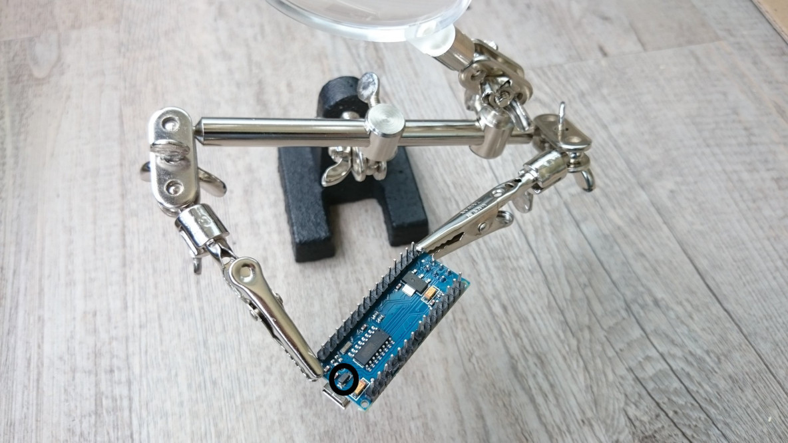

Arduno Nano funcionando a 3.7V y 16Mhz
Cuando el rendimiento de las baterías es algo clave, podemos usar Arduino a 18Mhz con una batería de 3.7v y optimizar su uso.
En este post vamos a poner como ejemplo un Arduino Nano que no es la versión oficial, por lo que el diseño puede ser diferente.
Problema
Al trabajar con el módulo SIM800L para la comunicación GPRS hemos de tener en cuenta que el nivel lógico de este módulo es 3.3V. Por lo que la línea lógica de 5v de Arduino Nano no nos va a valer.
El módulo SIM800 va a funcionar a 5v (siempre que haya una batería propia para SIM800L, que veremos en otro post), pero vamos a quemar nuestro módulo GSM al usar el canal RX o Reset a 5v provenientes de Arduino.
Además, si queremos usar una cómoda batería de litio 18650 o LiPo de 3.7V para alimentar Arduino, mantener un step-up para tener un voltaje constante de 5v es muy costoso, y vamos a tener que cargarla cada poco tiempo. Esto es debido a que el step-up va a pedir a la batería más en todo momento, aunque tengamos nuestro Arduino en modo sleep.
No recomiendo nada su uso, por experiencia, ya que en cuestión de horas podemos agotar la batería dejando nuestro proyecto muerto.
Y por experiencia también, he quemado un par de módulos al trabajar con 5v a nivel lógico, cuando en sus specs exponía que había que usarlos a 3.3V. Y esto ha sido por el USB, al cargar los sketch y alimentarlo posteriormente para las pruebas conectado y comunicándose. Recordemos que el USB envía 5v.
Solución
Para evitar este problema, podemos hacer algo muy simple, eliminar el diodo que conecta la línea de 5v del USB a nuestro Arduino Nano. De este modo, vamos a poder controlar qué voltaje le aplicamos, en mi caso 3.7v provenientes de una batería de litio 18650.

Mira el círculo negro que hay en la imagen de arriba, ese es el diodo que vamos a remover.

De nuevo, mira el círculo negro donde se ve como el diodo ha sido eliminado.
Otra opción es añadir un divisor de voltaje entre nuestro Arduino y los módulos que usemos a 3.3V si queremos no quemarlos. Pero en cualquier caso, vamos a tener el problema de que el módulo no funcionará a no ser que mantengamos la alimentación de Arduino Nano a 5v.
Es decir al aplicar un divisor de voltaje para llegar de 5 a 3v tenemos que la diferencia de 5v a 3.3v es 1.7v. Pero el resultado la diferencia de ese mismo divisor de voltaje aplicado a 3.7v son 2v. Y 2v no es detectado como nivel lógico alto (1) por algunos componentes, como es el caso del SIM800L por lo que no va a funcionar.
Por lo que añadiendo un divisor de voltaje al puerto de serie haremos que los módulos con lógica 3.3v dejen de funcionar cuando desconectemos el USB y lo alimentemos con una batería de 3.7v.
Por lo que si realizamos este cambio y eliminamos el diodo, tenemos que alimentar Arduino mientras lo tenemos conectado al USB para que funcione, ya que la línea de corriente de 5v estaría eliminada.
Un poco fuera de especificación
Cuando digo que estamos fuera de la especificación me refiero a que el módulo Arduino Nano va a trabajar a 18Mhz con un voltaje de 3.3v cuando debería de ser un voltaje de 5v. Un voltaje de 3.3V permite una frecuencia máxima de reloj de 10Mhz, aunque en la práctica funciona con una batería de 3.7v, ya nos encontraríamos al límite, pero dentro.
Aunque normalmente para trabajar a esos voltajes se suele usar una frecuencia más baja, 8Mhz.
Conclusión
La mejor solución para optimizar las baterías de 3.7v es comprar una placa de desarrollo Arduino que trabaje con el oscilador a 8Mhz. De este modo, la línea de corriente de 5v del USB va a ser convertida a 3.3v y vamos a trabajar a unas frecuencias más bajas y más fiables. Esto es debido a que normalmente a 8Mhz el voltaje que se necesita es de 3.3v.
Algunos Arduino de bajo coste que trabajan a 3.3v son los Arduino Pro Mini a 8Mhz y 3.3v.